10 Powerful Worship Songs About Worship
Top 10 Calls to Worship From The Bible
10 Powerful Scriptural Benedictions
20 Inspiring Quotes about Worship
20 Bibles Verses About Worship
https://www.mediashout.com/10-worship-songs-worship/
by Brandon Hadley | Jun 12, 2021 | Worship | 2 comments
¡@
Sometimes you want to draw attention to the act of worship¡Xeven as you¡¦re worshiping. Here are 10 songs to add to your worship presentation software that can help remind us why we worship God, and what happens when we do.
¡@
Here¡¦s what hymn writer C. Austin Miles had to say about writing ¡§In the Garden.¡¨
¡§One day in April, 1912, I was seated in the dark room where I kept my photographic equipment, and also my organ. I drew my Bible toward me and it opened at my favorite book and chapter, John chapter twenty. I don¡¦t know if this was by chance or by the work of the Holy Spirit. I will let you the reader decide. That story of Jesus and Mary in John 20 had lost none of its power and charm.
It was though I was in a trance, as I read it that day, I seemed to be part of the scene. I became a silent witness to that dramatic moment in Mary¡¦s life, when she knelt before her Lord and cried, ¡¥Rabboni.¡¦ I rested my hands on the open Bible, as I stared at the light blue wall. As the light faded, I seemed to be standing at the entrance of a garden, looking down a gently winding path, shaded by olive branches. A woman in white, with head bowed, hand clasping her throat, as if to choke back her sobs, walked slowly into the shadows. It was Mary. As she came unto the tomb, upon which she placed her hand, she bent over to look in, and ran away.
John, in a flowing robe, appeared looking at the tomb. Then came Peter, who entered the tomb, followed slowly by John. As they departed, Mary reappeared leaning her head upon her arm at the tomb, she wept. Turning herself, she saw Jesus standing there, so did I. I knew it was He. She knelt before Him, with arms outstretched, and looking into His face cried, ¡¥Rabboni.¡¦
I awakened in sunlight, gripping my Bible with my muscles tense, and nerves vibrating, under the inspiration of the Holy Spirit. I wrote as quickly as the words could be formed the lyrics exactly as it is sung today. That same evening, I wrote the tune. It is sung today as it was written in 1912.¡¨
I come to the garden alone,
While the dew is still on the roses,
And the voice I hear falling on my ear
The Son of God discloses.
And He walks with me, and He talks with me,
And He tells me I am His own;
And the joy we share as we tarry there,
None other has ever known.
He speaks, and the sound of His voice
Is so sweet the birds hush their singing,
And the melody that He gave to me
Within my heart is ringing.
I¡¦d stay in the garden with Him,
Though the night around me be falling,
But He bids me go; through the voice of woe
His voice to me is calling.
With more than 8,000 songs to her name, Fanny Crosby was America¡¦s most prolific hymn and gospel writer. Despite spending her life blind, Crosby was indefatigable. She also wrote more than 1,000 nonreligious songs, four books of poetry and two autobiographies.
In 1873, Crosby was visiting a friend who played a tune she had been working on. After playing the melody a couple of time she asked Crosby, ¡§What does this tune say to you?¡¨ Crosby thought about it a moment and responded, ¡§Blessed assurance, Jesus is mine!¡¨
Ms. Crosby then began dictating the worshipful lyrics to her friend, and ¡§Blessed Assurance¡¨ was born.
Blessed assurance, Jesus is mine!
Oh, what a foretaste of glory divine!
Heir of salvation, purchase of God,
Born of His Spirit, washed in His blood.
This is my story, this is my song,
Praising my Savior all the day long;
This is my story, this is my song,
Praising my Savior all the day long.
Perfect submission, perfect delight,
Visions of rapture now burst on my sight;
Angels, descending, bring from above
Echoes of mercy, whispers of love.
Perfect submission, all is at rest,
I in my Savior am happy and blest,
Watching and waiting, looking above,
Filled with His goodness, lost in His love.
This is one of my favorite songs to use within our church presentation software. When Laurie wrote it, she was a new mother and wife struggling to get by. Her family was living in a mobile home as her husband attended school and she felt pretty isolated¡Xa feeling compounded by not even having the money to make long-distance phone calls to friends or family.
Depleted and empty one morning during her quiet time, she grabbed her guitar and said to the Lord, ¡§Would you give me a song you would like to hear?¡¨ And ¡§I Love You Lord¡¨ basically wrote itself.
I love you, Lord
And I lift my voice
To worship You
Oh, my soul rejoice!
Take joy my King
In what You hear
Let it be a sweet, sweet sound in Your ear
¡§Unbroken Praise¡¨ was the last song to be written for the album that bears its name. Here¡¦s how Matt Redman tells the story of its origin:
¡§I¡¦d been playing around with the phrase unbroken praise and it seemed that there might be a song in there. To me it¡¦s all about bringing God an offering of worship that¡¦s as worthy of Him as possible. So the song talks about praise unending, praise unfailing, praise untainted. It talks about surrender and devotion, of bringing the overflow and outpouring an offering of our hearts and lives.
That last point is the one thing that this song really tries to hammer home; we need to back up the things we sing. My favourite line on this whole record comes from this song¡¦s bridge: ¡¥let my deeds outrun my words, but let my life outweigh my songs.¡¦
Ultimately that¡¦s what worship is all about. It has to mean surrender, some degree of life change. If it doesn¡¦t, our worship is just singing.¡¨
Unbroken praise be Yours, God, forever
All my praise be Yours, God, forever
Lord take this life, let it become Your throne
Unbroken praise be Yours
Unbroken praise be Yours, God, forever
All my praise be Yours, God, forever
Lord take this life, let it become Your throne
Unbroken praise be Yours
¡@
¡@
¡§I wrote Louder with my friends Jonas Myrin and Jason Ingram,¡¨ Matt Redman says. ¡§I was thinking of it as a call to worship. The chorus comes from Psalm 66:2¡¦s instruction to ¡¥make His praise glorious,¡¦ and I love the way that two other translations put it: the English Standard Version calls on us to ¡¥give Him glorious praise¡¦ and The Message urges us to ¡¥sing songs to the tune of His glory, set songs to the rhythm of his praise.¡¦
We can choose to make His praise joyful, to make it reverent, or all sorts of things, but one thing we have to do is make it glorious. Why? Because God is glorious. His praise can¡¦t be anything but.¡¨
There¡¦s a song that cannot be contained
There¡¦s a shout that breaks through every chain
God, we won¡¦t be silent
There¡¦s a faith that rises through the flames
There¡¦s a joy that chases the dark away
God, we won¡¦t be silent
And the greater the storm
The louder our song
¡§Revelation Song¡¨ represents a type of worship song that is built around a specific biblical passage. The song is birthed out of Revelation 4:8: ¡§And the four living creatures, each of them with six wings, are full of eyes all around and within, and day and night they never cease to say,
¡¥Holy, holy, holy, is the Lord God Almighty, who was and is and is to come!¡¦¡¨
Worthy is the Lamb who was slain
Holy, holy is He
Sing a new song to Him who sits on
Heaven¡¦s mercy seat
Holy, holy, holy is the Lord God Almighty
Who was and is and is to come
With all creation I sing praise to the King of kings
You are my everything and I will adore You
Kari Jobe had a dream that she couldn¡¦t quite interpret, and one day the interpretation came to her in the words of Ephesians 5:25¡V27: ¡§Husbands, love your wives, just as Christ loved the church and gave himself up for her to make her holy, cleansing her by the washing with water through the word, and to present her to himself as a radiant church, without stain or wrinkle or any other blemish, but holy and blameless.¡¨
¡§Let Your Glory Fall¡¨ was written out of her outcry for the church to be purified and ready for her bridegroom.
Only now will I come
Before your throne, holy one
By your thunderous grace
Spirit flood, come flood this place
Oh, let it rain
Oh, let it rain
Let your glory fall
Overwhelm my soul
Let your presence flood my life, oh lord
Written as an Easter Song, ¡§He Lives¡¨ addresses the reason we worship, which is the resurrected glory of Christ. We worship God because he lives in eternity, in the world, and in us.
All glory to Him upon the throne
Forever exalted and seated high
The Lamb of God He has overcome!
He is alive, He is alive!
He lives reigning in power
He lives, name above all names
Hallelujah now forever
Hallelujah Christ is risen!
He is risen
How can worship not arise from hearts that have been accepted because of God¡¦s infinite mercy and not because of our own righteousness. If we have anything over the heavenly host, it¡¦s that we¡¦ve experienced the everlasting grace of a forgiving God.
You know our failures and regrets
You always led us home
Redemption¡¦s arm has raised us up
Our triumph in the storm
For all that You have done for us
For every battle won
We¡¦ll raise a song to bless Your heart
For all that you have done
Moses saw God¡¦s majesty in the burning bush and when he asked for God to reveal His glory to him. On this side of the cross, we experience God¡¦s glory differently. It takes its residence inside of us and we experience it in a way that Moses never could.
Passion¡¦s Holy Ground is a song about worship where we ask God to show us His glory¡Xas it¡¦s manifested within us, making our hearts holy ground.
Here as we wait
Seek Your face
Come and make Your throne upon our praise
Here in this place
Have Your way
The moment that we see You, we are changed
Show us Your glory
Show us Your glory
In wonder and surrender we fall down
Show us Your glory
Show us Your glory
Let every burning heart be holy ground
We¡¦d love to hear from you. Tell us what worship songs
communicate the wonders of worship. While you¡¦re at it, check
out our free
trial of MediaShout 7 church
presentation software.
Check out our other posts about worship songs:
https://www.mediashout.com/calls-to-worship-from-the-bible-2021/
The call to worship can be used to address the congregation, or it can be spoken corporately. Here are the top 10 brief and emotive calls to worship from the Bible, that you can use in your worship software.
¡@
Salvation belongs to the Lord;
your blessing be on your people!¡XPsalm
3:8
This is a perfect example of a call to worship. It¡¦s simple, concise, and immediately reminds listeners that they¡¦re gathered as God¡¦s people. Drawing attention to the Lord¡¦s salvation and the blessings that He liberally pours out upon His children immediately creates an atmosphere of worship.
¡@
But I, through the abundance of your steadfast love,
will enter your house.
I will bow down toward your holy temple
in the fear of you.
Lead me, O Lord, in your righteousness
because of my enemies;
make your way straight before me.¡XPsalm
5:7¡V8
This call to worship is a little on the longer side, but still effective. For an invitation of this length, it¡¦s helpful to have your worship team play under it. You could show the passage with your church presentation software as the leader reads, or even simply show a fitting background for worship to help prepare the atmosphere. This will help draw the worshipers in and keep their attention as the call to worship is recited at your church gathering.
¡@
I will give thanks to the Lord with my whole heart;
I will recount all of your wonderful deeds.
I will be glad and exult in you;
I will sing praise to your name, O Most High.¡XPsalm
9:1¡V2
Obviously, the Psalms are a perfect source to mine for calls to worship. After all, it is the Jewish hymnal, and it¡¦s full of beautiful expressions of reverence. This is a perfect invitation for a worship response, especially if it transitions immediately into singing. There are many songs for worship that center around the theme of thanksgiving that would pair well with this call to worship.
Shout for joy to God, all the earth;
sing the glory of his name;
give to him glorious praise!
Say to God, ¡§How awesome are your deeds!
So great is your power that your enemies come cringing to you.
All the earth worships you
and sings praises to you;
they sing praises to your name.¡¨¡XPsalm
66:1¡V4
If you¡¦re planning on kicking off your church service with an upbeat worship song, this passage from Psalm 66 is a great place to start. It¡¦s emphatic, powerful, and perfect for reminding the congregation of the greatness and worthiness of God. Encourage your church media team to be creative with the backgrounds in the worship software they use. Worship backgrounds are an important piece of the puzzle that set the tone for a worship gathering. Also, upbeat praise and worship songs give the media team an opportunity to use fun motion backgrounds and creative slide designs.
¡@
Oh come, let us worship and bow down;
let us kneel before the Lord, our Maker!¡XPsalm
95:6
Brief but compelling, this call to worship is really on the nose. There¡¦s no question what the congregation is being invited to do. It¡¦s the simplicity of this call that makes it so powerful. It¡¦s a good way to begin a worship service that will start slowly and build to an energetic finish. When searching for bible verses about worship, this is a great place to start.
¡@
Make a joyful noise to the Lord, all the earth!
Serve the Lord with gladness!
Come into his presence with singing!
Know that the Lord, he is God!
It is he who made us, and we are his;
we are his people, and the sheep of his pasture.
Enter his gates with thanksgiving,
and his courts with praise!
Give thanks to him; bless his name!
For the Lord is good;
his steadfast love endures forever,
and his faithfulness to all generations.¡XPsalm
100
Here¡¦s another longer call to worship that can be used in a number of ways. You can call people to worship with the first stanza, and build the song choices around the other stanzas, introducing each song with the appropriate verses. You could also have people in the congregation stand up and read a different stanza from their place in the sanctuary as a call to worship. Still backgrounds for worship are a great choice for when the congregation is reading scripture from the screens. Be sure to choose colors and fonts that are easy to read so that everyone can participate. (You can read some tips on great slide designs for worship HERE).
¡@
For from the rising of the sun to its setting my name will be great among the nations, and in every place incense will be offered to my name, and a pure offering. For my name will be great among the nations, says the Lord of hosts.¡XMalachi 1:11
Here¡¦s an intriguing take. In this one, the Lord calls His people to worship¡Xand that worship becomes an avenue for making His name renowned among the nations. If you use this call to worship, you might even consider increasing its potency by lighting some incense in the sanctuary or using a hazer to simulate what the Israelite people experienced. If you can¡¦t have smoke in your church building, you can search for church motion graphics to be used in your worship software that will represent the concept on the MediaShout Media Store. This is another way to encourage your media team to be creative in using the features of your church presentation software.
Come to me, all who labor and are heavy laden, and I will give you rest. Take my yoke upon you, and learn from me, for I am gentle and lowly in heart, and you will find rest for your souls.¡XMatthew 11:28¡V29
If you¡¦re putting together a worship service with a more somber tone and reflective worship songs, this quote from Jesus is a strong call to worship. This invitation can be used to acknowledge the peace that comes from bringing your burdens to Jesus and resting in His unfailing love.
¡@
Since then we have a great high priest who has passed through the heavens, Jesus, the Son of God, let us hold fast our confession. For we do not have a high priest who is unable to sympathize with our weaknesses, but one who in every respect has been tempted as we are, yet without sin. Let us then with confidence draw near to the throne of grace, that we may receive mercy and find grace to help in time of need.¡XHebrews 4:14¡V16
One of the glories of the gospel is that¡Xbecause of Jesus Christ¡Xwe all have access to the throne room of God. The invitation to confidently approach God and receive mercy and grace is what sets Christianity apart from any world religion. This call to worship reminds us of the mercy and grace of Jesus Christ who came and died for our sins to redeem us and restore us to the Father. We have the ultimate hope!
¡@
Behold, I stand at the door and knock. If anyone hears my voice and opens the door, I will come in to him and eat with him, and he with me.¡XRevelation 3:20
Highlighting the reciprocal nature of our worship, this invitation reminds worshipers that the Lord ministers to us as we minister before him. For congregants that have a hard time engaging in worship, this call alerts them to the fact that Jesus is waiting for us to reach out. This is perfect for including before a participatory worship song or a prayerful response time.
¡@
Scripture is full of strong passages for leading people into worship. As you spend time in the Bible, pay attention to verses that can be used to inspire your congregation to worship. Look for passages that talk about the bigness, goodness, and love of God and use them to kick off your worship service with participation from your congregation.
Share your favorite calls to worship with us in the comments!
https://www.mediashout.com/scriptural-benedictions-for-worship/?et_fb=1&PageSpeed=off
by Brandon Hadley | Jun 15, 2021 | Worship | 8 comments
PLBenedictions have been used for centuries as a way to close church gatherings. And since they¡¦re scriptural, they¡¦re always an appropriate way to bring a service to an end.
Here are 10 benedictions you can display through your church presentation software to wrap up your worship service:
The Lord bless you and keep you;
the Lord make his face to shine upon you and be gracious to
you;
the Lord lift up his countenance upon you and give you peace.¡XNumbers
6:24¡V26
When it comes to scriptural benedictions, most people are familiar with this one. God specifically told Moses to pass this down to Aaron as a blessing to speak over Israel. It¡¦s endured as a standard of benediction because it¡¦s not only easy to remember, but it¡¦s filled with power and beauty.
The Lord will keep you from all evil;
he will keep your life.
The Lord will keep
your going out and your coming in
from this time forth and forevermore.¡XPsalm
121:7¡V8
In Psalm 121, the psalmist reminds himself that his help comes not from his own strength or abilities, but from God. In these eight verses, one¡¦s reminded of the importance of trusting in God¡¦s care and protection. It finishes with this beautiful reminder that God is intimately involved in every moment¡Xboth in our going out and in our coming in.
May the God of endurance and encouragement grant you to live in such harmony with one another, in accord with Christ Jesus, that together you may with one voice glorify the God and Father of our Lord Jesus Christ.¡XRomans 15:5¡V6
What does it take for the people of God to live in harmony with each other? Encouragement and endurance! Speaking this passage over your congregation asks God¡Xwho is defined by these characteristics¡Xto unify his church.
Now to him who is able to strengthen you according to my gospel and the preaching of Jesus Christ, according to the revelation of the mystery that was kept secret for long ages but has now been disclosed and through the prophetic writings has been made known to all nations, according to the command of the eternal God, to bring about the obedience of faith¡X to the only wise God be glory forevermore through Jesus Christ! Amen.¡XRomans 16:25¡V27
Paul finishes his letter to the church at Rome with this profound flourish. It¡¦s an ideal way to end a service, especially one that¡¦s focused on the transforming power of the gospel. This is a bit larger of a passage so you may consider displaying this through our worship presentation software, MediaShout. It would allow you to simply pull in all 3 of these verses at one time without the manual labor of typing every verse out in say PowerPoint for example¡K Check out the most powerful church presentation software today!
Now to him who is able to do far more abundantly than all that we ask or think, according to the power at work within us, to him be glory in the church and in Christ Jesus throughout all generations, forever and ever. Amen.¡XEphesians 3:20¡V21
Sometimes when you¡¦re reading Paul, you can sense him getting caught up in the excitement of what he¡¦s trying to communicate. From reading this passage, you¡¦d think that these are the last words in his epistle to the Ephesians. He¡¦s actually enraptured by expressing the mystery of Christ that he responds with prayer in the middle of his letter¡Xcreating the perfect benediction.
The grace of the Lord Jesus Christ and the love of God and the fellowship of the Holy Spirit be with you all.¡X2 Corinthians 13:14
If you want to invite someone from the congregation to give the benediction, this simple little passage is perfect. Even an eight-year-old child should be able to memorize and bless the congregation with it.
¡@
Now may the God of peace himself sanctify you completely, and may your whole spirit and soul and body be kept blameless at the coming of our Lord Jesus Christ.¡X1 Thessalonians 5:23
At the end of your service, you¡¦re going to release your congregation back into the maelstrom of everyday life. All the substance shared between you will be put to the test. This benediction is a humble request for the God of peace to begin the purifying work of sanctification in them.
May grace and peace be multiplied to you in the knowledge of God and of Jesus our Lord.
His divine power has granted to us all things that pertain to life and godliness, through the knowledge of him who called us to his own glory and excellence¡X2 Peter 1:2¡V3
In God¡¦s grace, he extends favor to his people despite their inability to merit it. Peter boldly asks that God¡¦s grace be multiplied to us along with his peace. In him we have all the power we need to live lives of godliness and goodness, and this is a powerful way to remind your congregation as they go out.
Now may the God of peace who brought again from the dead our Lord Jesus, the great shepherd of the sheep, by the blood of the eternal covenant, equip you with everything good that you may do his will, working in us that which is pleasing in his sight, through Jesus Christ, to whom be glory forever and ever. Amen.¡XHebrews 13:20¡V21
The book of Hebrews is magnificently summed up in this passage. God is associated with peace because he has atoned for our sin with an eternal covenant. This points to a future in which we will be made complete in him but also recognizes a present in which we are equipped to be obedient. Here we find another passage that¡¦s a bit longer. Try displaying this through your worship software as well, and pair it with background media to keep the congregation engaged with what you¡¦re doing! We even have some tips to make what you¡¦re displaying through your church presentation software readable so you won¡¦t have to worry if you¡¦re congregation has trouble seeing these verses!
Now to him who is able to keep you from stumbling and to present you blameless before the presence of his glory with great joy, to the only God, our Savior, through Jesus Christ our Lord, be glory, majesty, dominion, and authority, before all time and now and forever. Amen.¡XJude 24¡V25
When you want to send your people off with a powerful reminder of what God¡¦s capable of, this is the benediction. This is a powerful reminder that God is able to steady our path so we don¡¦t stumble and to keep us blameless and full of joy. These two verses are packed with rich, meaningful assurance for God¡¦s people.
Of course, after the benediction, you can always close with a song. The disciples, after the last supper concluded, sang a song before departing. You can do the same after the benediction and depart with a song of joy, excitement, or encouragement to send the congregation out ready to face the world.
https://www.mediashout.com/inspiring-worship-quotes/
by Brandon Hadley | Jun 15, 2021 | Worship | 39 comments
Worship is how we express our love, adoration, admiration, and wonder at God¡¦s presence. The Christian breathes in God¡¦s goodness and exhales worship.
For a lot of the church, worship has become synonymous with singing¡Xbut that¡¦s just one way that worship expresses itself. True worship happens when our entire life becomes a declaration of trust in God¡¦s incredible mercy.
Paul expressed this very idea when he said, ¡§I appeal to you therefore, brothers, by the mercies of God, to present your bodies as a living sacrifice, holy and acceptable to God, which is your spiritual worship.¡¨ (Rom. 12:1)
Here are 20 powerful and inspiring quotes to help you understand worship better. (You can download all these images for free to use in your worship software, bulletin, or on social media here.)
¡§I can safely say, on the authority of all that is revealed in the Word of God, that any man or woman on this earth who is bored and turned off by worship is not ready for heaven.¡¨¡XA.W. Tozer
¡@
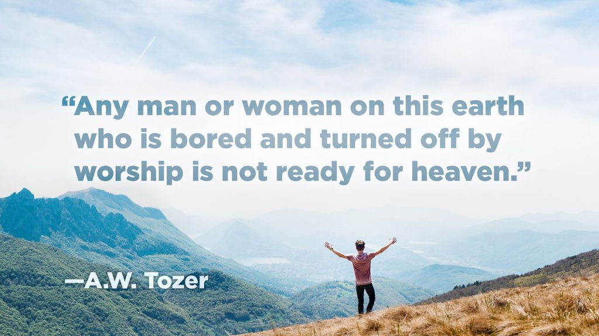
¡@
Someday worship will be an integral part of our everyday existence. It will not be an activity that comes from faith but will be a natural response that arises from the first-hand experience with the living God.
¡§I need to worship because without it I can forget that I have a big God beside me and live in fear. I need to worship because without it I can forget his calling and begin to live in a spirit of self-preoccupation. I need to worship because without it I lose a sense of wonder and gratitude and plod through life with blinders on. I need worship because my natural tendency is toward self-reliance and stubborn independence.¡¨¡XJohn Ortberg
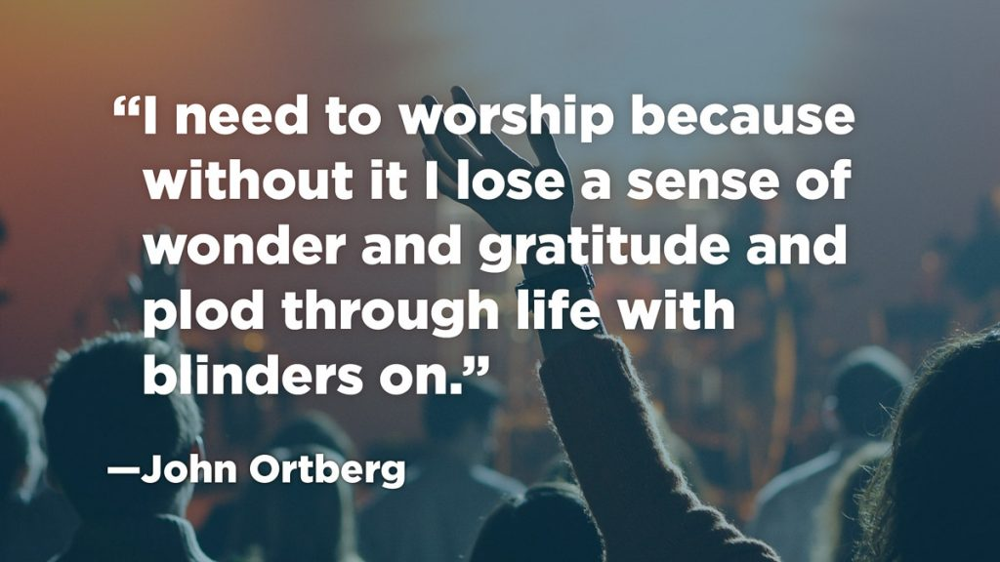
God uses worship to recenter our priorities and reestablish where our security lies. We can be taught why it¡¦s important to praise and glorify God, but until it¡¦s a regular part of our lives, we¡¦ll never understand how God is using it to keep us focused.
¡§You never go away from us, yet we have difficulty in returning to You. Come, Lord, stir us up and call us back. Kindle and seize us. Be our fire and our sweetness. Let us love. Let us run.¡¨¡XAugustine of Hippo
¡@
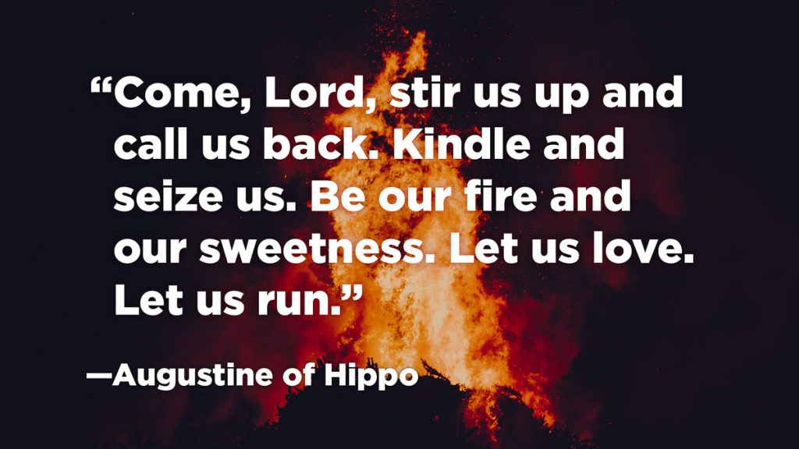
In this world, our hunger for worship will wax and wane. It¡¦s appropriate and imperative that we ask God to rekindle a worshipful spirit within us. Sometimes the most powerful prayer we can pray is, ¡§God, make me a worshiper.¡¨
¡§We are perishing for lack of wonder, not for lack of wonders.¡¨¡XG.K. Chesterton
We live in an amazing world that doesn¡¦t lack for awe-inspiring marvels of nature and technology. It¡¦s critical that we don¡¦t become deadened to wonder because astonishment is a raw material for worship.
The moment we lose that childlike sense of wonder, it¡¦s hard to worship with any real vigor.
¡§Nothing teaches us about the preciousness of the Creator as much as when we learn the emptiness of everything else.¡¨¡XCharles Spurgeon
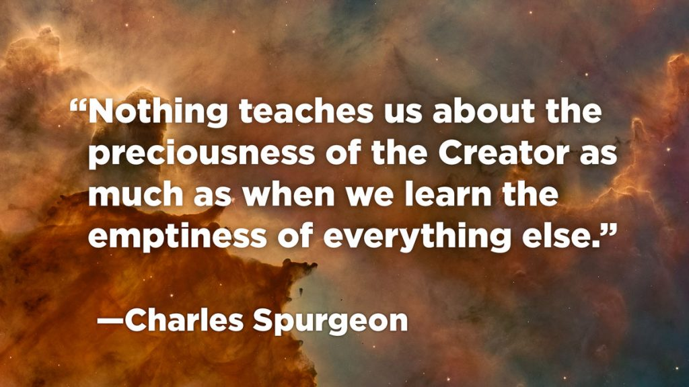
Every human being has a natural inclination toward worship. If our world isn¡¦t rightly ordered, we will end up worshiping and serving things besides God. It isn¡¦t until we¡¦re able to rightly prioritize God above everything else in our world that we can begin to worship in spirit and truth.
¡§Many Spirit-filled authors have exhausted the thesaurus in order to describe God with the glory He deserves. His perfect holiness, by definition, assures us that our words can¡¦t contain Him. Isn¡¦t it a comfort to worship a God we cannot exaggerate?¡¨¡XFrancis Chan
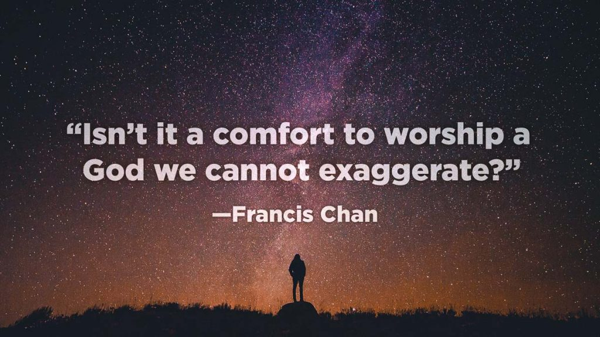
It¡¦s mindblowing to think that we can worship God for thousands of years and never exhaust his worshipful attributes. If we become bored with worship, it¡¦s likely that we¡¦ve lost sight of this truth.
¡§Next to the Word of God, music deserves the highest praise. The gift of language combined with the gift of song was given to man that he should proclaim the Word of God through music.¡¨¡XMartin Luther
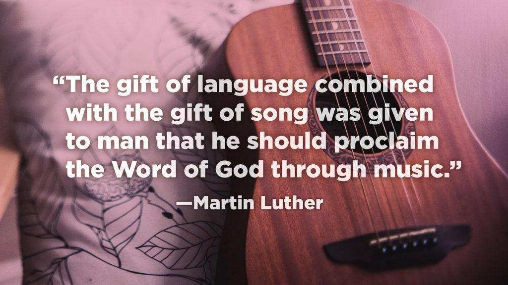
There¡¦s a reason that nearly every culture and religion incorporates worship into the act of worship. Music stirs some portion of our hearts that intellect alone cannot touch. When you think about it, it¡¦s strange that music should exist at all. But somewhere, at some time, someone sang the first song¡Xand it was a gift of God¡¦s grace.
¡§Worship is the proper response of all moral, sentient beings to God, ascribing all honor and worth to their Creator-God precisely because he is worthy, delightfully so.¡¨¡XD.A. Carson
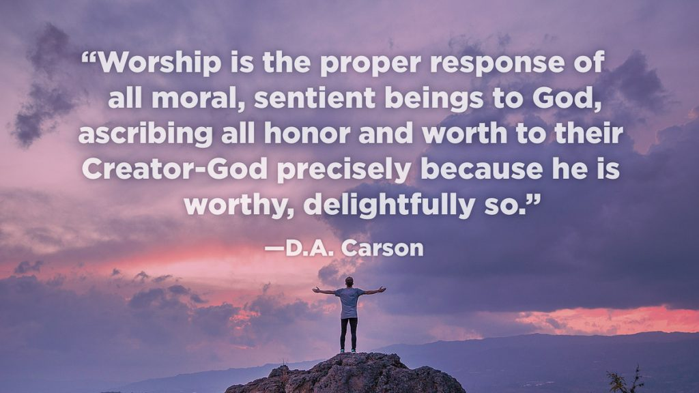
No one has to teach a Christian to worship God. In some way, every believer responds worshipfully to an encounter with God. It¡¦s really the only rational response. If we never feel those pulls toward worship, it might be a sign that we¡¦re drifting away from our first love.
¡§Who will deny that true religion consists, in a great measure, in vigorous and lively actings of the inclination and will of the soul, or the fervent exercises of the heart? That religion which God requires, and will accept, does not consist in weak, dull, and lifeless, wishes, raising us but a little above a state of indifference.¡¨¡XJonathan Edwards
¡@
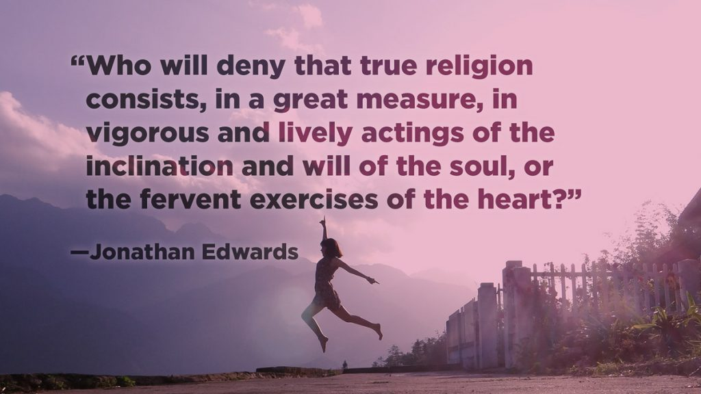
When we experience a life-changing encounter with God, worship is a natural impulse. As Christians mature, however, we discover that worship can¡¦t simply be reactive. We must learn to be proactive in glorifying God, even when it¡¦s not our current disposition. As David was known to do, we need to command ourselves to worship by declaring:
¡§Why are you cast down, O my soul, and why are you in turmoil within me? Hope in God; for I shall again praise him, my salvation and my God.¡¨¡XPsalm 43:5
¡§Worship has been misunderstood as something that arises from a feeling which ¡¥comes upon you,¡¦ but it is vital that we understand that it is rooted in a conscious act of the will, to serve and obey the Lord Jesus Christ.¡¨¡XGraham Kendrick
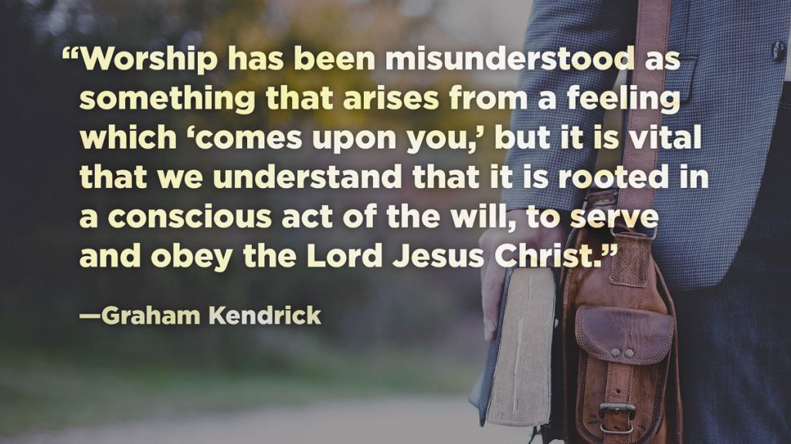
There are times when something stirs in our hearts and everything inside of us responds in worship, but those are grace-filled promptings of the Spirit. It¡¦s important that we make worship a conscience choice, and a willful act.
¡§The worship to which we are called in our renewed state is far too important to be left to personal preferences, to whims, or to marketing strategies. It is the pleasing of God that is at the heart of worship. Therefore, our worship must be informed at every point by the Word of God as we seek God¡¦s own instructions for worship that is pleasing to Him.¡¨¡XR.C. Sproul
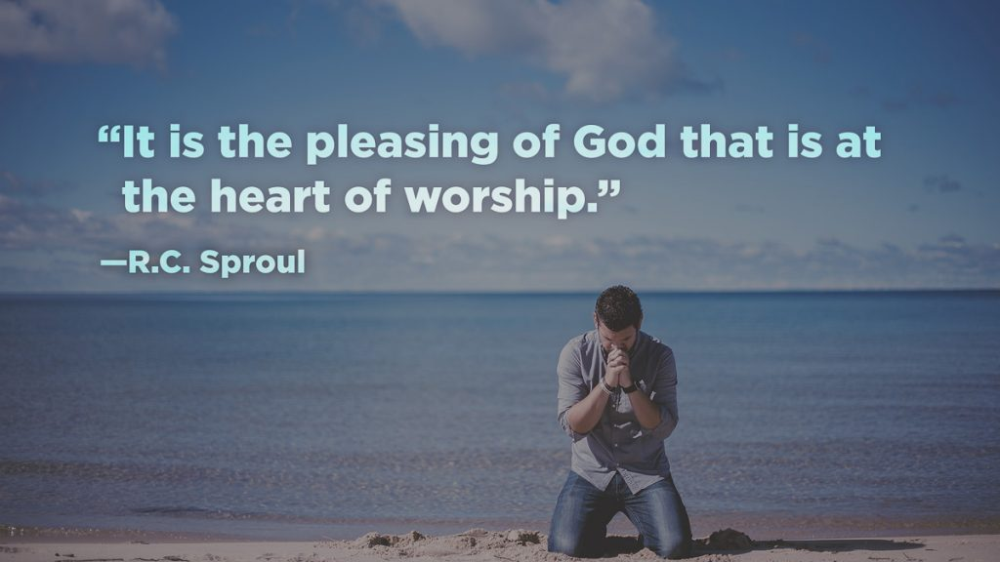
While we all have personal preferences for the kinds of music we enjoy or the sort of environments we find most worshipful, our praise should be grounded in our common understanding of God from his word.
¡@
¡@
¡§Put it this way: if your idea of God, if your idea of the salvation offered in Christ, is vague or remote, your idea of worship will be fuzzy and ill-formed. The closer you get to the truth, the clearer becomes the beauty, and the more you will find worship welling up within you. That¡¦s why theology and worship belong together. The one isn¡¦t just a headtrip; the other isn¡¦t just emotion.¡¨¡XN.T. Wright
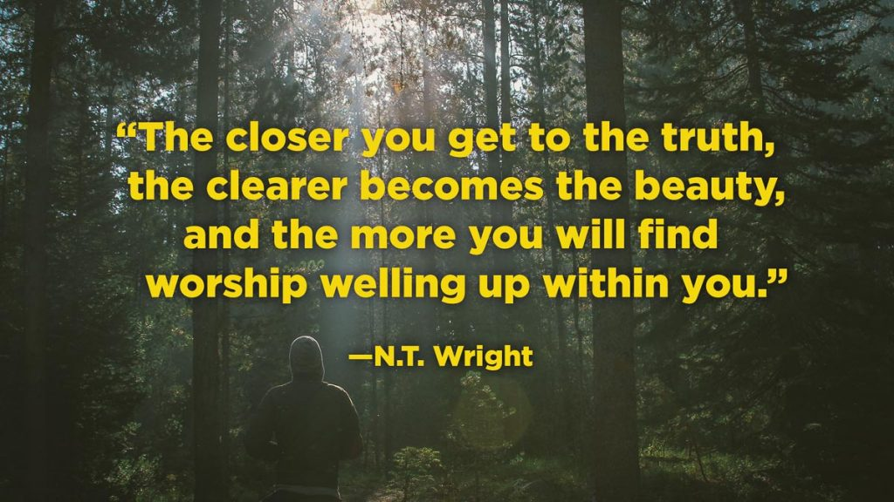
If our understanding of God is poor, our worship will be too. It¡¦s important that our worship comes out of an ever-increasing knowledge of who God is and what he has done for us.
¡§We should know and celebrate God with our whole person. While too many Christians neglect to serve God with the mind, others cultivate only their minds and neglect the emotional aspects of worship.¡¨¡XCraig S. Keener
While our worship needs to be grounded in the Word and the right understanding of God, that doesn¡¦t mean that it should be a purely intellectual enterprise. There are times when worship should touch our hearts so dramatically that an emotional response is only natural.
¡§Work becomes worship when you dedicate it to God and perform it with an awareness of his presence.¡¨¡XRick Warren
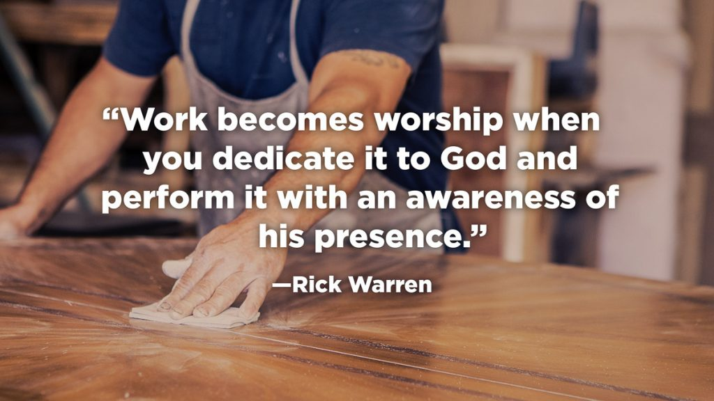
Everything we do can be an expression of worship. What matters is our posture towards God when we¡¦re doing it. With the right attitude, digging a ditch can be as much an act of worship as attending a church service.
¡§Cause every task of your day to be a sacred ministry to the Lord. However mundane your duties, for you they are a sacrament.¡¨¡XRichard Foster
¡@
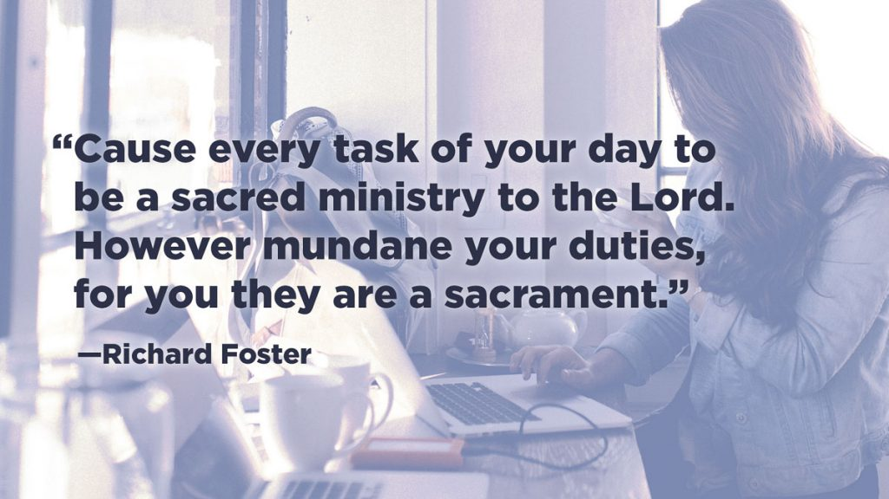
There are no inconsequential activities. When we live lives of worship, every activity becomes infused with significance. And we turn our daily activities into worship as we offer them to the Lord.
¡§There are no unique postures and times and limitations that restrict our access to God. My relationship with God is intimate and personal. The Christian does not go to the temple to worship. The Christian takes the temple with him or her. Jesus lifts us beyond the building and pays the human body the highest compliment by making it His dwelling place, the place where He meets with us.¡¨¡XRavi Zacharias
¡@
¡@
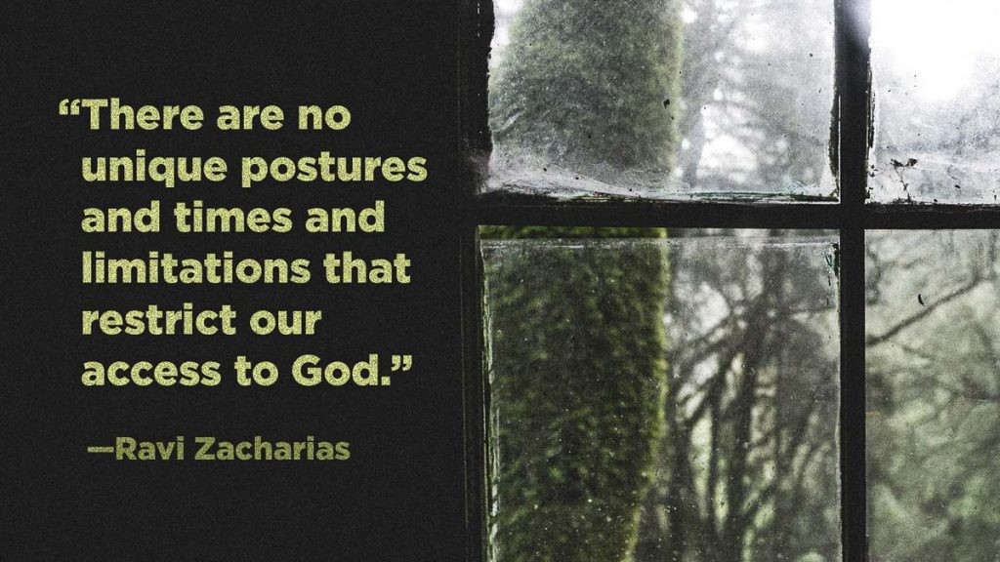
The reason that everything we do can be an act of worship is that God has made each one of us a temple where he dwells through the Holy Spirit. When we become aware of that presence, every moment of our day is sacred.
¡§But just as your body needs sleep, your soul needs time to rest in God. To learn more about Him. To talk to Him. To worship and praise Him. To fellowship with other brothers and sisters.¡¨¡XCraig Groeschel
¡@
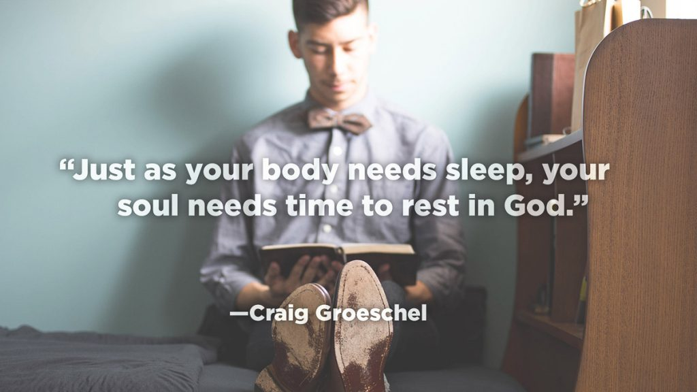
¡@
Like food and water, worship is a necessary part of human existence. It¡¦s easy to think that we can exist without it because we still exhibit all the outwards signs of life, but that¡¦s not the existence we were created to have. We were created to flourish.
¡§From your heroes you pick up mannerisms and phrases and tones of voice and facial expressions and habits and demeanors and convictions and beliefs. The more admirable the hero is and the more intense your admiration is, the more profound will be your transformation. In the case of Jesus, he is infinitely admirable, and our admiration rises to the most absolute worship. Therefore, when we behold him as we should, the change is profound.¡¨¡XJohn Piper
¡@
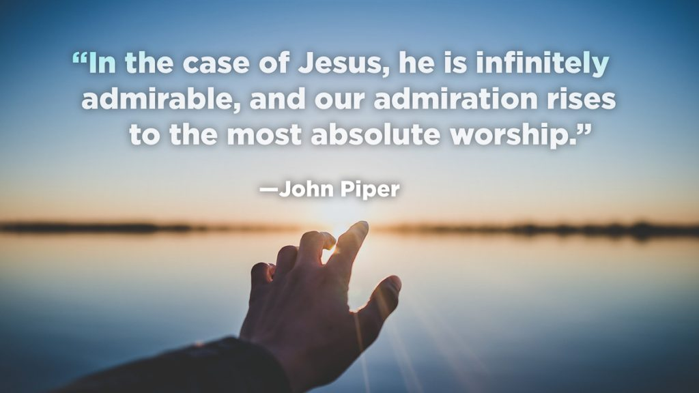
Paul reminds the Corinthians that they¡¦re transformed by what they fix our attention on. (2 Cor. 3:18) In this sense, worship is a tool that God is using to transform us. As we focus on glorifying him for his amazing attributes, we begin to reveal the same characteristics. When we worship God we develop such traits as forgiveness, tenderness, justice, righteousness, purity, kindness, and love.
¡§The highest form of worship is the worship of unselfish Christian service.¡¨¡XBilly Graham
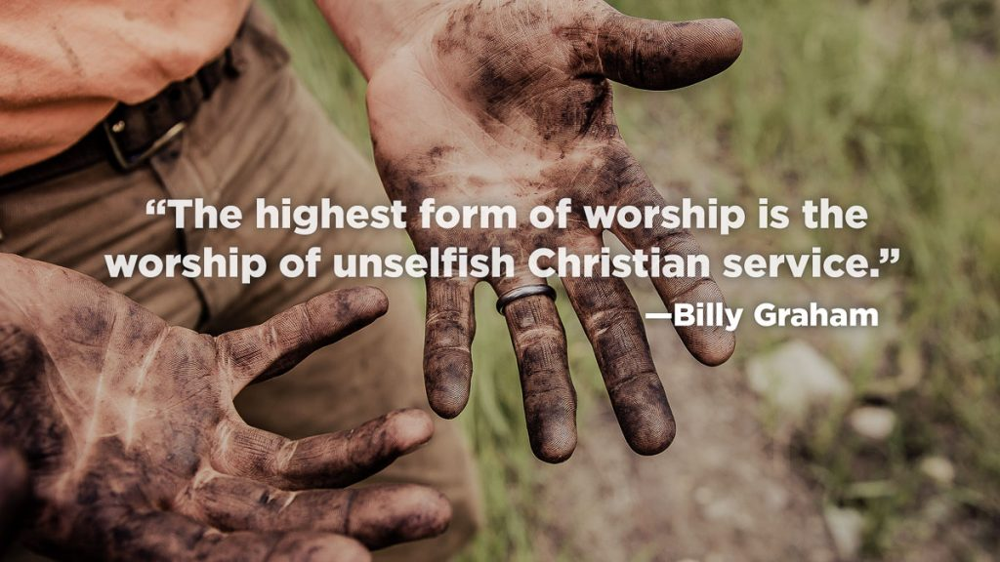
Worship cannot simply be about singing the songs we enjoy or doing our favorite activities. If that¡¦s all it is, then it¡¦s ultimately something we do for ourselves. By making ourselves living sacrifices, we remove ourselves from the equation and discover worship that¡¦s grounded in Christ. Worship should be an activity that is teaching us humility¡Xand not an opportunity for self-indulgence
¡§God directs his people not simply to worship but to sing his praises ¡¥before the nations.¡¦ We are called not simply to communicate the gospel to nonbelievers; we must also intentionally celebrate the gospel before them.¡¨¡XTimothy J. Keller
¡@
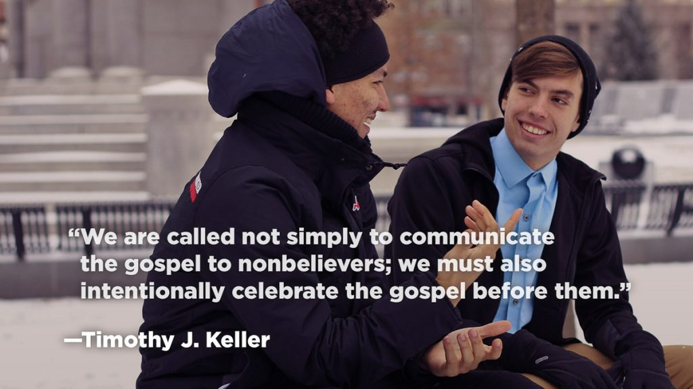
Everyone in the world is worshiping something because their spirits are hungry. For most people, their worship amounts to spiritual junk food. The world is longing to experience something truly worthy of praise. When they see us making ourselves living sacrifices in true worship, they discover the nourishment they¡¦ve been starving for.
It would be enough if our worship simply honored and magnified God, but he uses it to edify us as well. Worship prepares us to spend eternity with Christ by drawing us closer to him, making us more aware of his amazing attributes, and conforming us to his image. If you¡¦re interested in discovering what the Bible says about worship, check out the post 20 Bible Verses about Worship.
¡@
¡@
¡@
https://www.mediashout.com/20-bible-verses-about-worship-for-worship-software-2021/
¡@
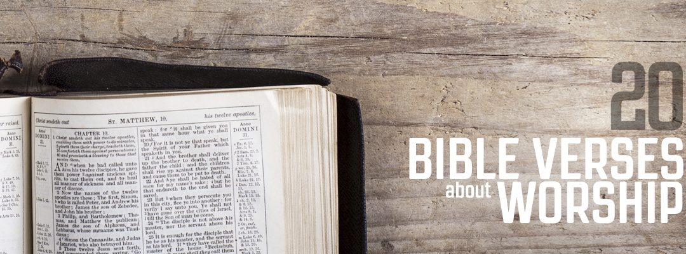
by Brandon Hadley | Apr 10, 2021 | Worship | 11 comments
hether you¡¦re a worship leader looking for some inspiration, a Bible study leader doing some research, or a pastor working on a sermon series on worship, we¡¦ve got you covered!
Here are 20 verses you can use in your worship presentation software to help you and your congregation wrap your mind around how the Bible describes worship.
¡§You shall serve the Lord your God, and he will bless your bread and your water, and I will take sickness away from among you. None shall miscarry or be barren in your land; I will fulfill the number of your days.¡¨
In the 20th chapter of Exodus, God spells out the ten commandments. For the next three chapters, Moses describes in detail the behavior that God expects from the nation of Israel. This includes instruction about things like:
In context, Moses ties worship to daily obedience¡Xand links the quality (and quantity) of life to God¡¦s response.
¡§There is none holy like the Lord:
for there is none besides you;
there is no rock like our God.¡¨
Hannah was the first wife of Elkanah. She couldn¡¦t conceive a child and endured that heartbreak compounded by the regular taunting of her husband¡¦s (fertile) second wife. Once the priest Eli overheard her praying and weeping bitterly to the Lord.
Eli assured her that God would give her the desires of her heart, and, in time, Hannah conceived a son who would become the prophet, Samuel. The second chapter of 1 Samuel opens with her prayer of thanksgiving and dedication.
¡§Because of your promise, and according to your own heart, you have brought about all this greatness, to make your servant know it. Therefore you are great, O Lord God. For there is none like you, and there is no God besides you, according to all that we have heard with our ears.¡¨
It¡¦s not just in the Psalms that you get a peek at David¡¦s worshipful spirit. Throughout the Samuels and Chronicles, you see David respond in beautiful worship to God. It just naturally bubbles up, which is why, despite David¡¦s serious sins, God would call him a man after his own heart. This message has been important to us as a church presentation software company. Designing worship software that exists for the sole purpose of showing verses like this is exactly why we do what we do.
Let the heavens be glad, and let the earth rejoice,
and let them say among the nations, ¡§The Lord reigns!¡¨
Let the sea roar, and all that fills it;
let the field exult, and everything in it!
Then shall the trees of the forest sing for joy
before the Lord, for he comes to judge the earth.
Oh give thanks to the Lord, for he is good;
for his steadfast love endures forever!
In the middle of 1 Chronicles is a beautiful Psalm of thanksgiving written by David. He is so overjoyed that the Ark of the Covenant is back in Jerusalem that he composes this song of worship.
Like much of the worship in the Old Testament, it is a celebration of the things God has done¡Xand is doing. It builds to a crescendo of creations song of praise, of seas roaring and fields exulting.
¡§Now I, Nebuchadnezzar, praise and extol and honor the King of heaven, for all his works are right and his ways are just; and those who walk in pride he is able to humble.¡¨
Sometimes God¡¦s worship is hard-won on the fields of hardened hearts. King Nebuchadnezzar was warned in a dream (which Daniel interpreted) that he needed to repent of his pride or he would suffer the indignity of being driven away from people and living like a wild animal. God patiently gave Nebuchadnezzar a year to respond.
After a year, the king was stricken as the Lord said. He lost his mind for seven years and lived like an animal. When his senses, and his kingdom, was returned to him, he had learned something valuable about worship¡Xand humility.
O God, you are my God; earnestly I seek you;
my soul thirsts for you;
my flesh faints for you,
as in a dry and weary land where there is no water.
So I have looked upon you in the sanctuary,
beholding your power and glory.
Because your steadfast love is better than life,
my lips will praise you.
So I will bless you as long as I live;
in your name I will lift up my hands.
My soul will be satisfied as with fat and rich food,
and my mouth will praise you with joyful lips,
when I remember you upon my bed,
and meditate on you in the watches of the night;
for you have been my help,
and in the shadow of your wings I will sing for joy.
My soul clings to you;
your right hand upholds me.
But those who seek to destroy my life
shall go down into the depths of the earth;
they shall be given over to the power of the sword;
they shall be a portion for jackals.
But the king shall rejoice in God;
all who swear by him shall exult,
for the mouths of liars will be stopped.
This psalm of David was likely written when he was fleeing through the wilderness of Judah from Absalom. As is typical of David, his worship doesn¡¦t ignore the direness of his situation. He worships in spite of it.
Now, obviously, this passage is fairly long. It could take ages to type out in PowerPoint or any other church presentation software out there. Our program MediaShout makes it easier than ever to insert large passages of scripture and limit the amount of time it takes to get the message inside of you, out to your team or congregation. Try this powerful worship software out for free, today!
¡§Sing to God, sing praises to his name;
lift up a song to him who rides through the deserts;
his name is the Lord;
exult before him!
Father of the fatherless and protector of widows
is God in his holy habitation.¡¨ (vs. 4¡V5)
If you were to simply read the fourth and fifth verses of Psalm 68, it would seem like a beautiful and quaint couplet of praise, but in context, it¡¦s so much more.
Throughout Psalm 68, David reminds Israel of God¡¦s exploits and faithfulness. It¡¦s an act of worship intended to reinforce that God will always be faithful. The protection and care that God has shown Israel in the past are celebrated as a reminder that God will always come through.
No matter how many enemies are at David¡¦s door, he always strengthens his resolve with a simple two-step process:
¡§My mouth is filled with your praise,
and with your glory all the day.¡¨ (v. 8)
The psalmist is pleading with God to continue to shelter him in his time of trouble. In the middle of Psalm 78, the writer reminds the Lord of his continued worship and encourages God not to prove his detractors right.
¡§For my enemies speak concerning me;
those who watch for my life consult together
and say, ¡¥God has forsaken him;
pursue and seize him,
for there is none to deliver him.¡¦¡¨ (vs. 10¡V11)
As is the case with most psalms of trouble, the author finishes with his resolve to continue to worship regardless.
¡§I will also praise you with the harp
for your faithfulness, O my God;
I will sing praises to you with the lyre,
O Holy One of Israel.
My lips will shout for joy,
when I sing praises to you;
my soul also, which you have redeemed.
And my tongue will talk of your righteous help all the day long,
for they have been put to shame and disappointed
who sought to do me hurt.¡¨ (vs. 22¡V24)
Bless the Lord, O my soul,
and all that is within me,
bless his holy name!
Bless the Lord, O my soul,
and forget not all his benefits,
who forgives all your iniquity,
who heals all your diseases,
who redeems your life from the pit,
who crowns you with steadfast love and mercy,
who satisfies you with good
so that your youth is renewed like the eagle¡¦s. (vs. 1¡V5)
This entire psalm of David¡¦s is inspiring as anything in Scripture. And one of the most affecting elements in this psalm is the way that David opens by instructing his spirit to ¡§bless the Lord.¡¨ He doesn¡¦t wait until he feels inspired to praise God, he commands his spirit to respond worshipfully to God.
To help inspire himself, David begins to remind himself of God¡¦s defining characteristics:
By the end of Psalm 103, David has become so inspired that he is instructing all of creation to sing God¡¦s praises.
¡§Bless the Lord, O you his angels,
you mighty ones who do his word,
obeying the voice of his word!
Bless the Lord, all his hosts,
his ministers, who do his will!
Bless the Lord, all his works,
in all places of his dominion.
Bless the Lord, O my soul!¡¨ (Psalm 103:20¡V22)This is already laid out perfectly to be used in a presentation. Feel free to use this content for the services you build in the worship software you find yourself using!
Praise the Lord!
Praise God in his sanctuary;
praise him in his mighty heavens!
Praise him for his mighty deeds;
praise him according to his excellent greatness!
Praise him with trumpet sound;
praise him with lute and harp!
Praise him with tambourine and dance;
praise him with strings and pipe!
Praise him with sounding cymbals;
praise him with loud clashing cymbals!
Let everything that has breath praise the Lord!
Praise the Lord!
It¡¦s only fitting that the Jewish hymnal would close with such a beautiful and joyous Psalm. This psalm of exaltation looks an awful lot like a 21st-century church service. Everyone is gathered in the sanctuary and worshiping him with melodic instruments: lutes, harps, strings, pipes, and trumpets. They¡¦re also worshiping with loud, crashing percussion.
If that isn¡¦t enough, worshippers are encouraged to respond physically in dance. It sure seems likely that this was written by the same guy who would respond so exuberantly to the ark being returned to Jerusalem (2 Sam. 6:14)! (Lucky for us, David doesn¡¦t ask us to drop trou.)
Lastly, pay particular
attention to things we¡¦re
instructed to praise the
Lord for:
What he¡¦s done (his mighty
deeds)
¡§O Lord, you are my God;
I will exalt you; I will praise your name,
for you have done wonderful things,
plans formed of old, faithful and sure.¡¨
Isaiah is the book to go to if you want to experience a God deserving of your worship. The book¡¦s fortieth chapter is one of Scripture¡¦s most inspiring visions of God¡¦s magnificence. As the prophet with the most complete revelation of the coming Messiah, it¡¦s no wonder that Isaiah would worship God for the wonderful things he does¡Xas well as the forethought and planning it has taken to realize them.
¡§Though the fig tree should not blossom,
nor fruit be on the vines,
the produce of the olive fail
and the fields yield no food,
the flock be cut off from the fold
and there be no herd in the stalls,
yet I will rejoice in the Lord;
I will take joy in the God of my salvation¡¨
Unlike his contemporary, Jeremiah, Habakkuk is frustrated that God is not judging Judah for its wickedness. It almost seems that God is reluctant to judge Judah¡¦s sin. God tells Habakkuk that the Chaldeans are being raised up as judges of Judah.
Habakkuk closes his book with a moving prayer that acknowledges God¡¦s coming judgment and the personal difficulties that will come with it. He closes with an affirmation that, no matter what happens, he will rejoice and find joy in the Lord.
¡§Most of the crowd spread their cloaks on the road, and others cut branches from the trees and spread them on the road. And the crowds that went before him and that followed him were shouting, ¡¥Hosanna to the Son of David! Blessed is he who comes in the name of the Lord! Hosanna in the highest!¡¦¡¨
As Jesus rides into Jerusalem on the back of a donkey, the crowd explodes into worship. But it isn¡¦t entirely sincere. Many of these voices yelling ¡§Hosanna¡¨ will be yelling ¡§crucify him¡¨ in a week¡¦s time. Jesus¡¦s triumphal entry into Jerusalem was part celebrity worship and part nationalistic expectation. Palm Sunday is easily one of the most important services to prepare for. Incorporating this passage of scripture into your worship software for that particular Sunday is a no-brainer!
It¡¦s important that our worship be sincere, and not driven by crowds or self-serving expectations, and this passage demonstrates that perfectly.
Jesus said to her, ¡§Woman, believe me, the hour is coming when neither on this mountain nor in Jerusalem will you worship the Father. You worship what you do not know; we worship what we know, for salvation is from the Jews. But the hour is coming, and is now here, when the true worshipers will worship the Father in spirit and truth, for the Father is seeking such people to worship him. God is spirit, and those who worship him must worship in spirit and truth.
Jesus has a provocative discussion with a Samaritan woman in the middle of a hot afternoon at Jacob¡¦s well. She quizzes him on whether Jerusalem is really where God is to be worshiped. Jesus¡¦s answer is a revelation.
A time is coming when the temple will be in the hearts of individuals who have submitted themselves to God¡¦s messiah. Those people will worship in spirit and truth.
¡§And they devoted themselves to the apostles¡¦ teaching and the fellowship, to the breaking of bread and the prayers. And awe came upon every soul, and many wonders and signs were being done through the apostles. And all who believed were together and had all things in common. And they were selling their possessions and belongings and distributing the proceeds to all, as any had need. And day by day, attending the temple together and breaking bread in their homes, they received their food with glad and generous hearts, praising God and having favor with all the people. And the Lord added to their number day by day those who were being saved.¡¨
As the church was being birthed, believers were building a lifestyle of community and worship. Their time was marked by:
This again looks like a perfectly laid out sermon just ready to be built and used in your worship presentation software!
¡§Oh, the depth of the riches and wisdom and knowledge of God! How unsearchable are his judgments and how inscrutable his ways!
¡§For who has known the mind of the Lord,
or who has been his counselor?¡¨
¡§Or who has given a gift to him
that he might be repaid?¡¨
For from him and through him and to him are all things. To him be glory forever. Amen.
In the 11th chapter of Romans, Paul is discussing the salvation of Israel and seems to erupt in worship. You can see this often in his letters. Like David, praise seems just beneath the surface of everything Paul writes, waiting to spring forth.
¡§For we will all stand before the judgment seat of God; for it is written,
¡§As I live, says the Lord, every knee shall bow to me,
and every tongue shall confess to God.¡¨
In Brian Doerksen¡¦s song ¡§Come Now Is the Time to Worship¡¨ He borrows from Paul¡¦s words:
¡§One day every tongue will confess you are God. One day every knee will bow. Still the greatest treasure remains for those who gladly choose you now.¡¨
There is coming a time when every knee will bow before God. Why not do so now?
¡§For this reason I bow my knees before the Father, from whom every family in heaven and on earth is named, that according to the riches of his glory he may grant you to be strengthened with power through his Spirit in your inner being, so that Christ may dwell in your hearts through faith¡Xthat you, being rooted and grounded in love, may have strength to comprehend with all the saints what is the breadth and length and height and depth, and to know the love of Christ that surpasses knowledge, that you may be filled with all the fullness of God.
Now to him who is able to do far more abundantly than all that we ask or think, according to the power at work within us, to him be glory in the church and in Christ Jesus throughout all generations, forever and ever. Amen.¡¨
Paul¡¦s worship doesn¡¦t just spring from the care or comfort he personally receives from God. His worship comes from his prayer and concern that everyone would know the depth, breadth, length, and height of God¡¦s love for them. Our concern that others might know and experience Christ needs to help drive us to prayer and worship.
¡§Praise be to the God and Father of our Lord Jesus Christ, the Father of compassion and the God of all comfort, who comforts us in all our troubles, so that we can comfort those in any trouble with the comfort we ourselves receive from God.¡¨
Paul kicks off his second letter to the church at Corinth with a worshipful and instructive word of praise. Why does God comfort us in our troubles? So that we may comfort those in trouble. Praise him.
¡§From the same mouth come blessing and cursing. My brothers, these things ought not to be so. Does a spring pour forth from the same opening both fresh and salt water? Can a fig tree, my brothers, bear olives, or a grapevine produce figs? Neither can a salt pond yield fresh water.¡¨
James reminds us that sincere worship comes from pure hearts. In the same way, we shouldn¡¦t use our tongues to praise God and then curse the people he has made in his image, we shouldn¡¦t compartmentalize praise to a church service and not see how all our actions reflect our true worship.
By default, we¡¦ve come to call the time dedicated to singing songs in church ¡§worship.¡¨ Displaying Bible verses in order to convey this message has never been more necessary and luckily more easy than ever with our church presentation software geared specifically for this.
All in all, true worship is really defined by the importance of God in our daily lives. This is why Paul tells us, ¡§I appeal to you, therefore, brothers, by the mercies of God, to present your bodies as a living sacrifice, holy and acceptable to God, which is your spiritual worship.¡¨ (Romans 12:1) Worship overflows from hearts surrendered to Christ.
Looking for a new and powerful church presentation software to utilize motion graphics for your church or ministry? Check out MediaShout 7 and begin using motion backgrounds for worship today!
¡@
¡@
¡@